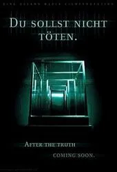

The genetics
The film is a fictional trial of Josef Mengele, the SS doctor who carried out experiments on prisoners at Auschwitz, including on twins, and selected prisoners for the gas chambers. Before the war Mengele had worked as assistant to the geneticist Otmar von Verschuer, studying the genetic factors behind traits such as cleft lip and palate, and at Auschwitz he conducted twin studies for the Kaiser Wilhelm Institute of Anthropology. The film's trial, however, deals with his crimes as a whole rather than with genetics specifically. Mengele is portrayed as an unrepentant, intelligent man who defends himself as a servant of medical progress, and the film examines how such arguments can persuade. Rohm's mother's role in killings at a psychiatric clinic links the story to the Nazi "euthanasia" of disabled people, a programme rooted in eugenic thinking. The scenario is hypothetical: the real Mengele died in Brazil in 1979, and his identity was confirmed by forensic examination of his remains and by DNA testing in 1992.
How genetics is portrayed
- Overall portrayal of genetics
- negative Nazi eugenic medicine is shown as criminal and its practitioner as a seductive monster, with the euthanasia killings by Rohm's mother extending the guilt; the film's verdict, spoken by his own defender, condemns him.
- Outcome of the genetic intervention
- negative The Nazi selections and experiments recalled by survivors in court were atrocities; the trial brings out the harm and nothing redeems it.
- Josef Mengele
- villain Aim: curiosity, ideological (negative). In the backstory he experimented on Auschwitz prisoners and selected people for the gas chambers; on trial he claims to have served medical progress, but the film presents him as a manipulative, unrepentant monster whom even his own lawyer finally declares guilty. SS doctor, later a fugitive.
The story
Peter Rohm, a young German lawyer, has long been planning a book about Josef Mengele, the Auschwitz doctor known as the "Angel of Death". He is taken to Argentina by a mysterious publisher and meets Mengele himself, now in his late eighties and terminally ill; the man who drowned in Brazil in 1979 was a relative. Mengele has decided to return to Germany and stand trial, and wants Rohm to defend him. Rohm accepts, to the horror of his colleagues and his wife. Mengele is arrested on arrival and tried. Survivors testify about his crimes; Mengele does not deny the facts but claims he acted for medical progress and by the standards of his time, and his eloquence begins to sway people. Rohm and his family face hostility, and he learns that his own mother, a nurse, took part in killings at a psychiatric clinic. In his final plea he declares Mengele guilty and says he should spend his remaining life in prison.